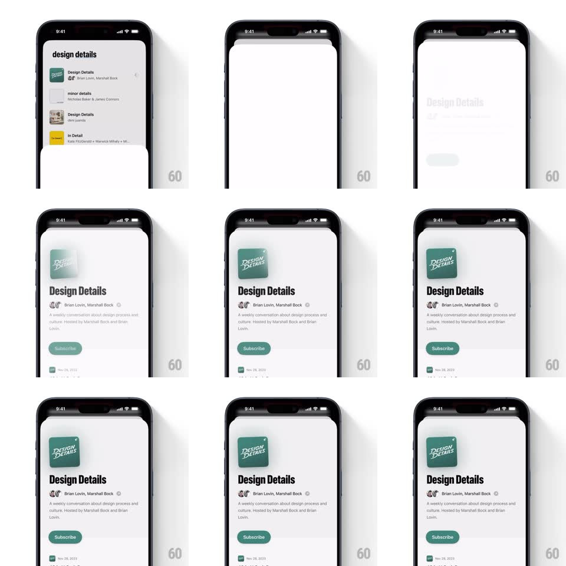

Media
Frame-by-frame

Rebuild this interaction 1:1: Queue's podcast detail sheet - tapping a show in the podcast list opens a bottom sheet whose contents enter staggered: the artwork scales in first, then title, hosts, description, and the Subscribe button fade up one after another.

Rebuild this interaction 1:1: Queue's podcast detail sheet - tapping a show in the podcast list opens a bottom sheet whose contents enter staggered: the artwork scales in first, then title, hosts, description, and the Subscribe button fade up one after another.
## Integration
Integration: stack-agnostic spec - springs given as stiffness/damping, timed motions as duration + curve; map every value to your framework and animation library of choice.
## Scene
The podcast list ("design details" header, rows of shows with artwork, titles, hosts) sits behind. The sheet holds: green square "DESIGN DETAILS" artwork, bold "Design Details" title, "Brian Lovin, Marshall Bock" host line with avatars, a two-line description, a green "Subscribe" pill, and episode rows starting below.
## Motion spec
Pattern: sheet rise + staggered content cascade.
- The sheet rises from the bottom (spring ~320/26, 380ms) as the list behind dims (black 35%) and scales down slightly (0.97).
- Artwork: scale 0.6 -> 1 with fade, spring ~400/18, 350ms, starting 80ms after the sheet begins moving.
- Title: fade + translateY 14px -> 0, 250ms, starting 140ms in.
- Hosts line: same shape, starting 200ms in.
- Description: same shape, starting 260ms in.
- Subscribe pill: same shape plus scale 0.9 -> 1, starting 320ms in.
- Each step eases out; the whole cascade resolves in about 600ms.
## Calibration
- Stagger steps are 60ms - readable rhythm, not a blur.
- Elements only move up and fade - no sideways drift.
## Reduced motion
Sheet fades in with all content already placed.
## Don't miss
- The artwork has a soft shadow that deepens as it lands.
- The list behind stays visible at the top edge - the sheet does not cover the status bar area.